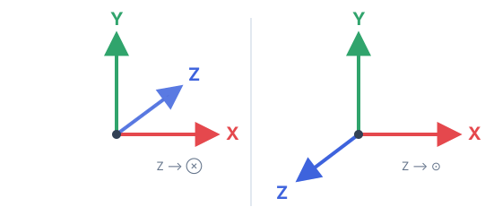
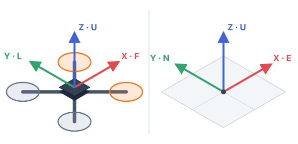
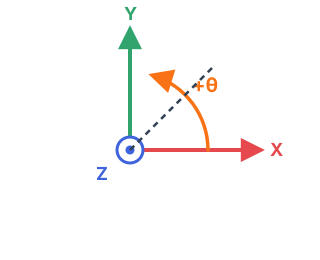
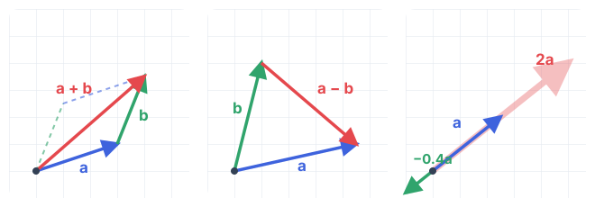
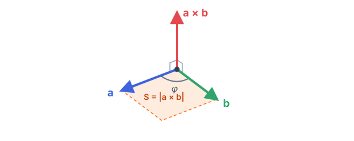

Vector & QuaternionVectors & Quaternions
Mỗi giây, bộ điều khiển của quadcopter phải trả lời hàng trăm lần hai câu hỏi: “Mình đang nghiêng thế nào?” và “Cần xoay thêm bao nhiêu để về đúng tư thế mong muốn?”. Bài viết này giới thiệu những công cụ hình học giúp trả lời hai câu hỏi đó — hệ tọa độ, vector và quaternion — theo hướng thực hành, dành cho người viết firmware bay. A quadcopter has to answer two questions hundreds of times per second: how am I tilted right now, and how much do I need to rotate to reach the desired attitude. This page walks through the geometric toolkit behind those answers — coordinate frames, vectors and quaternions — from the practical point of view of someone writing flight firmware.
Hệ tọa độCoordinate frames
Hệ tay trái hay hệ tay phải?Left-handed or right-handed?
Mọi phép tính trong không gian ba chiều đều bắt đầu từ việc chọn ba trục X, Y, Z vuông góc với nhau từng đôi một. Tuy nhiên, chỉ vuông góc thôi thì chưa đủ: khi đã cố định X và Y, trục Z vẫn có thể chĩa theo một trong hai chiều ngược nhau. Hai lựa chọn này tạo ra hai hệ tọa độ đối xứng với nhau như qua gương, gọi là hệ tay trái và hệ tay phải.
Cách phân biệt nhanh: chĩa ngón cái theo trục X, ngón trỏ theo trục Y, rồi gập ngón giữa vuông góc với hai ngón kia — ngón giữa chính là chiều của trục Z. Làm được như vậy với tay phải thì đó là hệ tay phải, với tay trái thì là hệ tay trái.
Every 3D calculation starts by agreeing on three mutually perpendicular axes X, Y and Z. Perpendicularity alone is not enough, though: for the same X and Y, the Z axis can point in either of two opposite directions, giving two mirror-image worlds — a left-handed and a right-handed frame.
A quick check: point your thumb along X and your index finger along Y; your middle finger, bent at a right angle, then shows Z. Whichever hand makes this work names the frame.

Các trục chỉ về đâu? Quy ước FLU và ENUWhich way is which: FLU and ENU
Chọn xong hệ tay phải, ta còn phải quyết định mỗi trục chỉ về hướng nào trên vật thật. Một quy ước được dùng rộng rãi là REP-103 của cộng đồng ROS (Robot Operating System). Quy ước này dùng hai hệ tọa độ:
Knowing the frame is right-handed, we still have to attach the axes to real things. A widely used convention from the ROS community is REP-103, which defines two frames:
FLU
- Xchỉ về phía trước, theo mũi drone (Forward)Forward, out of the nose
- Ychỉ sang trái (Left)to the Left
- Zchỉ lên trên, xuyên qua nóc drone (Up)Up through the top
Số đo của gia tốc kế, con quay hồi chuyển và các lệnh vận tốc góc đều được tính trong hệ này. Hệ này xoay cùng với drone.Accelerometer and gyro readings and angular-rate commands live here. It turns together with the drone.
ENU
- Xchỉ về hướng Đông (East)East
- Ychỉ về hướng Bắc (North)North
- Zchỉ lên trời, ngược chiều trọng lực (Up)Up, against gravity
Tư thế và vị trí của drone được mô tả so với hệ này. Hệ này cố định, không di chuyển theo drone.The drone’s attitude and position are described relative to this frame. It stays put.

Chiều quay nào là dương?Which rotation is positive?

Hãy tưởng tượng bạn nhìn dọc theo một trục, sao cho đầu mũi tên của trục chĩa thẳng vào mắt mình. Khi đó, phép quay quanh trục này được coi là dương nếu ngược chiều kim đồng hồ.
Một cách nhớ tương đương là quy tắc nắm tay phải: nắm tay phải lại và chĩa ngón cái theo chiều của trục, thì bốn ngón còn lại cong theo chiều quay dương. Ví dụ: yaw dương (quay quanh trục Z hướng lên) nghĩa là mũi drone quay sang trái khi nhìn từ trên xuống.
Look along an axis so that it points straight at your eye. A rotation about that axis is positive when it goes counter-clockwise.
Equivalently, use the right-hand grip rule: thumb along the axis, and your curled fingers show the positive direction. A positive yaw (about Z pointing up) therefore turns the nose to the left when seen from above.
VectorVectors
Vector trong không gian ba chiều đơn giản là một bộ ba số (x, y, z), gọi là các thành phần của vector. Chỉ với một kiểu dữ liệu này, ta có thể biểu diễn rất nhiều đại lượng: một điểm, một hướng, một trục quay, vận tốc, gia tốc, vận tốc góc… Trong firmware bay, một số vector tiêu biểu là:
A 3D vector is simply three numbers (x, y, z) — its components. That one data type can stand for many things: a point, a direction, a rotation axis, velocity, acceleration, angular rate… Typical vectors in flight firmware:
accelgia tốc do gia tốc kế đo đượcspecific force measured by the accelerometergyrovận tốc góc do con quay hồi chuyển (gyro) đo đượcangular rate from the gyroscoperateTargetvận tốc góc mà bộ điều khiển muốn drone đạt tớiangular rate requested by the controllergyroBiasđộ lệch (bias) của cảm biến, xác định khi hiệu chuẩnsensor calibration offset
Để dễ theo dõi, các ví dụ dưới đây dùng một struct tự viết rất đơn giản. Những thư viện thực tế như Eigen, GLM hay thư viện riêng của từng firmware đều có các hàm tương đương, chỉ khác tên gọi. To keep things concrete we’ll use a minimal hand-written struct. Real libraries (Eigen, GLM, a firmware’s own helpers…) all provide equivalents under different names.
struct Vec3 {
float x, y, z;
};
Vec3 accel = {0.1f, -0.2f, 9.8f};
accel.z -= 9.81f;std::vector trong C++. std::vector là một mảng động dùng để chứa dữ liệu, hoàn toàn không liên quan đến hình học.
Don’t confuse a geometric vector with C++’s std::vector — that one is a dynamic array and has nothing to do with geometry.
Độ dài và chuẩn hóaLength and normalisation
Độ dài của vector (còn gọi là chuẩn, tiếng Anh là norm) được tính bằng định lý Pythagoras mở rộng cho ba chiều. Chuẩn hóa một vector là chia vector đó cho chính độ dài của nó: hướng được giữ nguyên, còn độ dài trở thành 1. Vector có độ dài bằng 1 gọi là vector đơn vị; nó rất tiện khi ta chỉ quan tâm đến hướng, chẳng hạn để biểu diễn trục quay.
The length (norm) comes from Pythagoras extended to three dimensions. Normalising means dividing a vector by its own length: the direction stays, the length becomes 1. Such a unit vector is the natural way to express “just a direction”, e.g. a rotation axis.
float norm(Vec3 v) {
return sqrtf(v.x * v.x + v.y * v.y + v.z * v.z);
}
Vec3 normalized(Vec3 v) {
float n = norm(v);
return {v.x / n, v.y / n, v.z / n};
}
Vec3 v = {2, 3, 6};
norm(v); // 7
normalized(v); // (0.286, 0.429, 0.857)Cộng, trừ và nhân với một sốAddition, subtraction, scaling
Phép cộng và trừ vector được thực hiện theo từng thành phần: x với x, y với y, z với z. Về mặt hình học, muốn có a + b, ta đặt gốc của b vào đầu mút của a, rồi nối từ gốc của a đến đầu mút của b. Còn a − b là vector đi từ đầu mút của b đến đầu mút của a — rất tiện khi tính vị trí tương đối hoặc sai số. Nhân vector với một số k sẽ làm vector dài ra (hoặc ngắn lại) k lần; nếu k âm thì vector còn bị đảo chiều.
Addition and subtraction work component by component. Geometrically, a + b places b’s tail at a’s tip and joins a’s tail to b’s tip; a − b is the arrow from b’s tip to a’s tip — handy for relative positions and errors. Multiplying by a number k stretches the vector k times; a negative k also flips it.

Vec3 operator+(Vec3 a, Vec3 b) { return {a.x + b.x, a.y + b.y, a.z + b.z}; }
Vec3 operator-(Vec3 a, Vec3 b) { return {a.x - b.x, a.y - b.y, a.z - b.z}; }
Vec3 operator*(Vec3 a, float k) { return {a.x * k, a.y * k, a.z * k}; }
Vec3 a = {2, -1, 4}, b = {1, 3, -2};
a + b; // (3, 2, 2)
a - b; // (1, -4, 6)
a * 0.5; // (1, -0.5, 2)Đôi khi ta cần nhân hoặc chia hai vector theo từng thành phần. Ví dụ, khi hiệu chuẩn cảm biến, mỗi trục có một hệ số tỉ lệ riêng nên phải chia riêng cho từng trục:
Sometimes you need component-wise multiplication or division by another vector — for example in sensor calibration, where every axis has its own scale factor:
Vec3 operator/(Vec3 a, Vec3 b) { return {a.x / b.x, a.y / b.y, a.z / b.z}; }
Vec3 accelCal = (accelRaw - accelBias) / accelScale;Tích vô hướngDot product
Tích vô hướng (dot product) của hai vector cho kết quả là một số, bằng tích độ dài của hai vector nhân với cosin của góc giữa chúng. Hiểu đơn giản, tích vô hướng cho biết hai vector “cùng chiều” với nhau đến mức nào: kết quả dương khi chúng chỉ về cùng một phía, bằng 0 khi chúng vuông góc, và âm khi chúng chỉ về hai phía ngược nhau.
The dot product of two vectors yields a single number: the product of their lengths times the cosine of the angle between them. Intuitively it measures how much the two vectors “agree” — positive when they point the same way, zero when perpendicular, negative when opposed.
float dot(Vec3 a, Vec3 b) {
return a.x * b.x + a.y * b.y + a.z * b.z;
}
float angleBetween(Vec3 a, Vec3 b) {
float c = dot(a, b) / (norm(a) * norm(b));
return acosf(fminf(fmaxf(c, -1.0f), 1.0f)); // clamp against rounding
}
dot({2, -1, 4}, {1, 3, -2}); // -9
angleBetween({1, 0, 0}, {1, 1, 0}); // 0.785 rad = 45°dot(a, û). Chẳng hạn, chiếu vector trọng lực lên trục Z của thân drone sẽ cho biết drone đang nghiêng nhiều hay ít.
Use it for: the projection length of a onto a unit direction û is just dot(a, û). Projecting gravity onto the body Z axis, for instance, tells you how far the drone is tilted.
Tích có hướngCross product
Tích có hướng (cross product) a × b cho kết quả là một vector vuông góc với cả a và b. Chiều của vector này xác định bằng quy tắc nắm tay phải: bốn ngón tay cong từ a sang b thì ngón cái chỉ chiều của a × b. Độ dài của nó bằng diện tích hình bình hành tạo bởi a và b, tức là . Lưu ý rằng a × b = −(b × a): đổi thứ tự hai vector thì kết quả đổi chiều.
The cross product a × b yields a vector perpendicular to both a and b. Its direction follows the right-hand rule (curl from a toward b) and its length equals the area of the parallelogram spanned by a and b, i.e. . Note that a × b = −(b × a): swapping the order flips the result.

Vec3 cross(Vec3 a, Vec3 b) {
return {a.y * b.z - a.z * b.y,
a.z * b.x - a.x * b.z,
a.x * b.y - a.y * b.x};
}
cross({2, -1, 4}, {1, 3, -2}); // (-10, 8, 7)
cross({1, 0, 0}, {0, 1, 0}); // (0, 0, 1): X × Y = ZDòng cuối cũng là một cách kiểm tra hệ tay phải: X × Y phải ra đúng Z. Trong điều khiển bay, tích có hướng được dùng mỗi khi cần tìm trục quay ngắn nhất để đưa một hướng trùng với một hướng khác — ví dụ, xoay trục Z của thân drone cho thẳng hàng với phương trọng lực đo được. The last line doubles as a handedness check: in a right-handed frame X × Y must equal Z. In flight control, the cross product shows up whenever you need the shortest rotation axis taking one direction onto another (say, aligning the body Z axis with measured gravity).
Biểu diễn tư thếRepresenting orientation
Vị trí và vận tốc thì rõ ràng đều là vector. Nhưng với tư thế — tức vật đang quay về hướng nào trong không gian — thì không có cách biểu diễn nào tốt nhất cho mọi tình huống. Dưới đây là bốn cách phổ biến, mỗi cách có điểm mạnh riêng:
Position and velocity are vectors, no debate. Orientation (how a body is rotated in space) has no single representation that is best for everything. Four common ones, each with its own strengths:
| Cách biểu diễnRepresentation | Số tham sốNumbers | Dễ hiểu với ngườiHuman-readable | Thuận tiện tính toánGood for math |
|---|---|---|---|
| Góc EulerEuler angles | 3 | ●●● | ● |
| Trục – gócAxis–angle | 3 + 1 | ●● | ●● |
| Vector quayRotation vector | 3 | ●● | ●● |
| Quaternion | 4 | ● | ●●● |
Góc EulerEuler angles
Ba góc roll (lăn — nghiêng sang trái hoặc phải), pitch (chúc — cúi hoặc ngóc mũi) và yaw (xoay — đổi hướng mũi) là cách mô tả tư thế gần gũi nhất với con người, kiểu như “drone đang chúc mũi 10° và nghiêng phải 5°”. Mỗi góc ứng với một lần quay quanh một trục, và ba lần quay được thực hiện lần lượt, nối tiếp nhau.
Vì cũng gồm ba con số, góc Euler thường được lưu trong một biến Vec3. Tuy vậy, về bản chất chúng không phải là vector: cộng hai bộ góc Euler với nhau không cho ra một phép quay có ý nghĩa.
The three angles roll, pitch and yaw are the most human-friendly form: “nose down 10°, banked right 5°”. Each one is a rotation about a single axis, applied one after another.
Since they are three numbers, they are often stored in a Vec3 — even though they are not really a vector (adding two sets of Euler angles gives no meaningful rotation):
euler.xroll — quay quanh trục X (hướng trước)roll — about X (forward)euler.ypitch — quay quanh trục Y (hướng trái)pitch — about Y (left)euler.zyaw — quay quanh trục Z (hướng lên)yaw — about Z (up)
Tuy dễ hiểu, góc Euler có hai nhược điểm khiến chúng ít được dùng trong tính toán:
- Kết quả phụ thuộc vào thứ tự quay. Quay quanh X rồi quanh Y sẽ cho kết quả khác với quay quanh Y rồi quanh X. Có tới 6 thứ tự quay hợp lệ (12 nếu tính cả các kiểu lặp lại trục). Trong robot và hàng không, thứ tự thường dùng là yaw → pitch → roll, gọi tắt là ZYX.
- Khóa gimbal (gimbal lock). Khi góc pitch đạt ±90° (mũi drone chĩa thẳng lên trời hoặc xuống đất), trục quay roll và trục quay yaw trùng nhau, khiến ta mất đi một bậc tự do. Lúc này nhiều cặp giá trị (roll, yaw) khác nhau lại cùng mô tả một tư thế, và các góc thay đổi đột ngột, thất thường khi drone đi qua vị trí này.
Vì vậy, không có công thức gọn gàng nào để ghép hai phép quay hay tính độ lệch giữa hai tư thế nếu chỉ dùng góc Euler. Góc Euler phù hợp để hiển thị cho người xem hoặc để nhập lệnh, hơn là để tính toán bên trong.
Two weaknesses keep Euler angles out of most calculations:
- Order dependence. Rotating about X then Y is not the same as Y then X; there are 6 valid orders (12 if you count repeated-axis variants). Robotics and aviation usually use yaw → pitch → roll, known as ZYX.
- Gimbal lock. At pitch = ±90° (nose straight up or down) the roll and yaw axes line up and one degree of freedom vanishes: many (roll, yaw) pairs describe the same attitude, and the angles jump erratically when passing through.
As a result, there are no tidy formulas for composing two rotations or taking the difference between attitudes directly in Euler angles. They are great for displaying and entering attitudes, not for computing with them.
Trục – gócAxis–angle
Theo định lý quay Euler, từ tư thế ban đầu, ta luôn có thể đưa vật tới bất kỳ tư thế nào chỉ bằng một phép quay duy nhất quanh một trục cố định nào đó. Do đó, mọi tư thế đều có thể mô tả bằng hai thông tin:
Euler’s rotation theorem says that any orientation can be reached from the initial one by a single rotation about some fixed axis. So an orientation can be described by a pair:
- ûtrục quay, biểu diễn bằng một vector đơn vịthe axis — a unit vector
- θgóc quay quanh trục đó, tính bằng radianthe angle around it, in radians
// 60° around the axis (1, 2, 2)
Vec3 axis = normalized({1, 2, 2}); // (0.333, 0.667, 0.667)
float angle = 60 * M_PI / 180; // 1.047 radCách biểu diễn này dễ hình dung và không bị khóa gimbal, nhưng việc ghép hai phép quay liên tiếp vẫn còn phức tạp. This avoids gimbal lock and is easy to picture, but composing two rotations is still awkward.
Vector quayRotation vector
Nếu nhân vector trục quay với góc quay, ta gộp được cả hai thông tin vào một vector duy nhất: . Hướng của r cho biết trục quay, còn độ dài của r cho biết góc quay. Vector này gọi là vector quay (rotation vector) — chỉ với ba con số, nó mô tả đầy đủ một phép quay.
Vector quay có một tính chất rất hữu ích cho việc điều khiển: nếu vật quay với vận tốc góc (đo trong hệ gắn với thân) không đổi và đúng bằng r rad/s, thì sau đúng 1 giây nó sẽ hoàn thành phép quay mà r mô tả. Nói cách khác, vector quay trả lời trực tiếp câu hỏi “cần quay bao nhiêu, quanh trục nào”; chỉ cần chia nó cho khoảng thời gian mong muốn là có ngay lệnh vận tốc góc.
Merge axis and angle into one by multiplying: . The direction of r is the axis, its length is the angle. This is the rotation vector — just three numbers that fully describe a rotation.
The property that makes it so useful for control: if a body keeps a (body-frame) angular rate exactly equal to r rad/s, then after exactly one second it has performed the rotation that r describes. In other words, a rotation vector literally says “how much to turn, and about which axis” — divide by the time you want it to take and you have an angular-rate command.
// The same 60° rotation about (1, 2, 2), as one vector
Vec3 r = normalized({1, 2, 2}) * (60 * M_PI / 180); // (0.349, 0.698, 0.698)QuaternionQuaternions
Quaternion là một bộ gồm bốn số (w, x, y, z). Một phép quay góc θ quanh trục đơn vị û được biểu diễn bằng một quaternion có độ dài bằng 1 theo công thức:
A quaternion is a set of four numbers (w, x, y, z). A rotation by θ about a unit axis û is encoded as a unit quaternion like this:
Công thức dùng “nửa góc” này thoạt nhìn có vẻ lạ, nhưng trên thực tế nó giúp mọi phép toán với phép quay trở nên gọn, nhanh và ít sai số: không cần hàm lượng giác trong vòng lặp chính, không có điểm kỳ dị như góc Euler, và để giữ độ dài luôn bằng 1 chỉ cần một phép chuẩn hóa đơn giản. Một vài tính chất nên nhớ:
(1, 0, 0, 0)là quaternion “không quay”, ứng với tư thế ban đầu.- q và −q biểu diễn cùng một phép quay (tương ứng với góc θ và θ + 360°).
- Quaternion liên hợp biểu diễn phép quay ngược lại.
- Về mặt toán học, quaternion là sự mở rộng của số phức lên bốn chiều. Trong bài này, ta chỉ cần đến phần ứng dụng của nó cho phép quay.
The formula looks odd at first, but this “half-angle” encoding makes every rotation operation compact, fast and numerically well-behaved: no trigonometry in the main loop, no singularities, and keeping the norm at 1 needs only a cheap normalisation. A few facts worth remembering:
(1, 0, 0, 0)is the “no rotation” quaternion — the initial attitude.- q and −q represent the same rotation (θ versus θ + 360°).
- The conjugate is the inverse rotation.
- Mathematically, quaternions extend complex numbers to four dimensions; here we only need the part that deals with rotations.
Thử nghiệm: một phép quay, bốn cách biểu diễnTry it: one rotation, four views
Kéo thanh trượt để thay đổi góc quay θ quanh một trục cố định û ∥ (1, 2, 2) (đường nét đứt màu cam). Hãy quan sát mô hình drone, vector quay (mũi tên màu tím), quaternion và góc Euler thay đổi cùng lúc như thế nào. Bạn cũng có thể kéo chuột (hoặc vuốt) trong khung hình để xoay góc nhìn. Drag the slider to change the angle θ about the fixed axis û ∥ (1, 2, 2) (orange dashed line). Watch how the drone model, the rotation vector (purple arrow), the quaternion and the Euler angles change together. Drag inside the view to orbit the camera.
- Góc quay θAngle θ
- 0° = 0.000 rad
- Trục quay ûAxis û
- (1, 2, 2) / 3 = (0.333, 0.667, 0.667)
- Vector quay r = θûRotation vector r = θû
- (0.000, 0.000, 0.000) rad
- Quaternion q
- (1.000, 0.000, 0.000, 0.000)
- Góc Euler (thứ tự ZYX)Euler angles (ZYX)
- rollroll 0° pitchpitch 0° yawyaw 0°
Các phép toán với quaternionWorking with quaternions
Tạo quaternion từ cặp trục – góc, hoặc từ vector quay (chỉ cần tách độ dài của vector ra làm góc quay):
Building a quaternion from axis–angle, and from a rotation vector (just split off the length as the angle):
struct Quat {
float w, x, y, z;
};
Quat fromAxisAngle(Vec3 axis, float angle) {
Vec3 u = normalized(axis);
float s = sinf(angle / 2);
return {cosf(angle / 2), u.x * s, u.y * s, u.z * s};
}
Quat fromRotationVector(Vec3 r) {
float angle = norm(r);
if (angle < 1e-6f) return {1, 0, 0, 0};
return fromAxisAngle(r, angle);
}
Vec3 toRotationVector(Quat q) {
if (q.w < 0) q = {-q.w, -q.x, -q.y, -q.z}; // take the short way round
float s = sqrtf(q.x * q.x + q.y * q.y + q.z * q.z);
if (s < 1e-6f) return {0, 0, 0};
float angle = 2 * atan2f(s, q.w);
return Vec3{q.x, q.y, q.z} * (angle / s);
}Chuyển ngược từ quaternion sang góc Euler (thứ tự ZYX) để hiển thị cho người dùng:
Converting back to Euler angles (ZYX order) for display:
Ghép hai phép quay: tích HamiltonComposing rotations: the Hamilton product
Muốn áp dụng thêm một phép quay lên một phép quay khác, ta nhân hai quaternion với nhau. Phép nhân này không có tính giao hoán: nói chung . Điều này cũng giống ngoài đời thực: “quay quanh X rồi quanh Z” sẽ cho kết quả khác với “quay quanh Z rồi quanh X”.
Applying one rotation on top of another is quaternion multiplication. It is not commutative: in general — just as in real life, “turn about X, then about Z” ends somewhere different from “about Z, then about X”.
Quat operator*(Quat a, Quat b) {
return {a.w * b.w - a.x * b.x - a.y * b.y - a.z * b.z,
a.w * b.x + a.x * b.w + a.y * b.z - a.z * b.y,
a.w * b.y - a.x * b.z + a.y * b.w + a.z * b.x,
a.w * b.z + a.x * b.y - a.y * b.x + a.z * b.w};
}
Quat conj(Quat q) { return {q.w, -q.x, -q.y, -q.z}; }Quay một vectorRotating a vector
Để quay một vector v bằng quaternion q, ta coi v là một quaternion có w = 0, rồi “kẹp” nó giữa q và q* như sau:
To rotate a vector v by a quaternion q, treat v as a quaternion with w = 0 and “sandwich” it between q and q*:
Vec3 rotate(Vec3 v, Quat q) {
Quat p = q * Quat{0, v.x, v.y, v.z} * conj(q);
return {p.x, p.y, p.z};
}
Quat yaw90 = fromAxisAngle({0, 0, 1}, M_PI / 2);
rotate({1, 0, 0}, yaw90); // (0, 1, 0): X turns into Y, counter-clockwiseĐộ lệch giữa hai tư thếDifference between two attitudes
Phép quay đưa tư thế q₁ đến tư thế q₂ (biểu diễn trong hệ gắn với thân ở tư thế q₁) được tính bằng . Chuyển kết quả này sang vector quay, ta có ngay câu trả lời “cần quay bao nhiêu, quanh trục nào” — đúng thứ mà bộ điều khiển tư thế cần.
The rotation that takes attitude q₁ to q₂, expressed in q₁’s body frame, is . Turn it into a rotation vector and you have “how much to turn, about which axis” — exactly what an attitude controller needs.
Kết hợp tất cả trong vòng lặp bayPutting it together in the flight loop
Đoạn mã dưới đây phác thảo hai việc cốt lõi mà bộ điều khiển dùng quaternion nào cũng phải làm: (1) tích phân số đo của con quay hồi chuyển để cập nhật tư thế, và (2) chuyển độ lệch tư thế thành lệnh vận tốc góc. Đây chỉ là minh họa ý tưởng, chưa phải mã bay hoàn chỉnh — mã thật còn cần bù trôi bằng gia tốc kế, giới hạn giá trị, bộ lọc, v.v.
Here is a sketch of the two core jobs every quaternion-based controller performs: (1) integrating the gyro to update the attitude, and (2) turning the attitude error into an angular-rate command. It illustrates the idea only — real flight code also needs accelerometer drift correction, limits, filtering and more.
Quat attitude = {1, 0, 0, 0}; // body → world (ENU)
Quat target = {1, 0, 0, 0};
void loop(float dt) {
// (1) gyro rates are in the body frame, so they multiply on the right
attitude = normalized(attitude * fromRotationVector(gyro * dt));
// (2) rotation still needed, as a rotation vector, scaled into a rate command
Vec3 error = toRotationVector(conj(attitude) * target);
Vec3 rateTarget = error * ATTITUDE_GAIN; // rad/s, fed to the rate PID
}Tóm tắt nhanhCheat sheet
| Khi cần…I want to… | DùngUse |
|---|---|
| Biết hai hướng gần nhau đến mức nàoSee how aligned two directions are | dot(a, b) |
| Tìm hướng vuông góc với hai vectorFind a direction perpendicular to two vectors | cross(a, b) |
| Lưu tư thế hiện tạiStore the current attitude | Quat |
| Áp dụng phép quay q₂ sau q₁ (trong hệ gắn với thân)Apply q₂ after q₁ (in the body frame) | q1 * q2 |
| Quay một vectorRotate a vector | q * (0, v) * conj(q) |
| Đổi độ lệch tư thế thành lệnh vận tốc gócAttitude error → rate command | toRotationVector(conj(q) * target) |
| Hiển thị cho người xemShow it to a human | góc EulerEuler angles |
Tài liệu tham khảoFurther reading
- quadcopter.dev — «Вектор, кватернион»Chương sách gốc (tiếng Nga) về dự án quadcopter mã nguồn mở Flix của Oleg Kalachev — nguồn cảm hứng cho trang này.The original chapter (in Russian) from Oleg Kalachev’s book on the open-source Flix quadcopter — the inspiration for this page.
- github.com/okalachev/flixMã nguồn firmware Flix, gồm các thư viện vector và quaternion đang chạy trên drone thật.The Flix firmware, including the real vector and quaternion libraries flown on the drone.
- REP-103Quy ước về đơn vị đo và hệ tọa độ trong ROS.ROS conventions for units and coordinate frames.
- eater.net/quaternionsLoạt video tương tác giải thích quaternion một cách trực quan (Ben Eater & Grant Sanderson).Interactive explorable videos on quaternions (Ben Eater & Grant Sanderson).